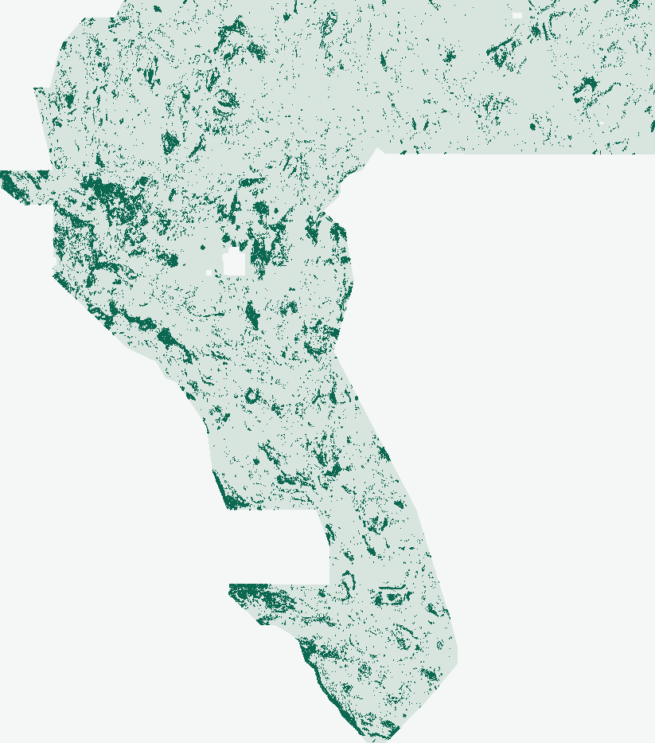

DOE GEMS / Research release 01
A new TIFF.
Not a new claim.
Testing whether magnetic texture offsets across gravity edges reveal concealed faults—without recycling the strongest historical submissions.
NOT APPROVED FOR SUBMISSIONLocal TIFF contract passed
Download for research. Do not submit.
This is a newly generated model output, not a renamed reference. It failed the paired performance gate; complete parallel-run evidence is also missing. Automated inspection has already made the decision—no human inspector is required.
gems30-TDX1-44090-20261025-5fc508ea81ac.tif
File identity & validation receipt
- SHA-256
9556e3ddd8ea7658ca510ab02d5b5304ac4c3332c54e7f86df5a24769bd03cdb- Contract
- One float32 band · EPSG:32611 · 3,730 × 3,292 · exact template transform · finite [0,1] inside · NaN nodata outside
- Receipt
- Reopened-file validation · Provenance sidecar
01 / The experiment
A useful signal.
Not a competitive model yet.
Two-scale profile matching added information beyond the three raw physics inputs. But the six-feature candidate lost to the stronger 19-band comparator on identical buffered holdouts. We preserve that negative result instead of spending a weekly slot.
The final run uses the corrected 17-pixel physical-support and training guard. One registered engineering correction followed the first negative result; the same inspected folds are not fresh independent confirmation. Correction & original-run provenance.
| Fixed arm | HOLDOUT-DTI | 95% CI |
|---|---|---|
| Three raw physics bands | 0.06459 | [0.05537, 0.07430] |
| TDX-1 · fixed new candidate | 0.07284 | [0.06348, 0.08306] |
| Core 19-band comparator | 0.13982 | [0.12418, 0.15590] |
Evaluator component-holdout-v3-blockstats-20261025; buffered whole-component regional trials. These are catalogue-recovery proxy measurements, not organizer scores or leaderboard forecasts. Full protocol and uncertainty: scientific review.

02 / Automated inspection
Every gate has a state.
Passed, failed, or unknown.
Unknown never means approved.
| Gate | State | Evidence rule |
|---|---|---|
| TIFF contract & exact hash | passed | Reopened shared-writer GeoTIFF matches template; SHA-256 binds this decision to its exact bytes |
| Pooled holdout & confidence interval | passed | HOLDOUT-DTI requires evaluator/protocol, withheld positives and spatial-bootstrap 95% CI |
| Beat same-protocol comparators | failed | Fixed candidate must improve both same-protocol controls with positive paired CI lower bound |
| Single-feature leakage canaries | passed | All 22 raw/derived inputs tested alone in four folds; raw bidirectional and training-only univariate AUC |
| Count-matched experiment | passed | All fixed arms must realize the same predeclared active-domain budget in every fold |
| Surface · observed registry | unknown | 110 recorded comparisons; threshold rho >0.90 or dot overlap >0.70 is duplicate-stop |
| Final dots · observed registry | passed | 110 recorded comparisons; threshold rho >0.90 or dot overlap >0.70 is duplicate-stop |
| Complete parallel registry | unknown | Nine-site public snapshots cannot attest all parallel rasters or missing original surfaces |
| External lane-allocation evidence | unknown | Autonomous research continuation is not an externally supplied lane assignment |
| Comparable historical-best rerun | unknown | Do not substitute an archived metric or a new comparator for a missing historical-best rerun |
| Experiment budget | passed | At most three experiments / two experimental hours |
| Submission name & short note | passed | Named artifact and note of at most 140 characters |
03 / Learning from H33
Why pruning may have helped.
The historical H33 support can be reproduced exactly by removing catalogue-adjacent dots from the GEMSDOE28 base. Under the max-credit kernel, redundant predictions can add penalty without adding coverage. That is a plausible metric mechanism—not proof of hidden fault discovery.
The owner's 0.2778 attribution remains an unverified historical claim, not ORGANIZER-CONFIRMED. No live leaderboard value or higher-score forecast is asserted.
Read the source-linked analysis ↗What makes this file different?
New gravity-normal profile features, a newly fitted six-feature HGB, and no historical raster inputs to the model.
Maximum observed surface Spearman: 0.053133.
Maximum final-dot overlap within 3 px: 40.4922%.
Similarity diagnostics, not DTI. Coverage includes nine frozen public snapshots and explicitly audited late-arriving TIFFs, not all runs or original surfaces. Global uniqueness remains unverified.
Pinned registry & exclusions · Late-reference addendum04 / Parallel research preserved
Other lanes. Separate evidence.
These records arrived through concurrent main-branch merges. Their holdouts are different: we do not rank them against TDX-1 or select a weekly submission here. “Promote” in a peer receipt is that lane's reported research verdict, not competition approval.
G30-S19 · habitat + EDGE
Its lane reports research promotion under an interleaved-component protocol. Not rerun or adjudicated by TDX-1; its conditional uncertainty is not interchangeable with this page's spatial-block CI.
Peer run card ↗H-CC1 · contact coincidence
Preserved negative record. Its emitted count missed the registered budget; do not reinterpret that comparison as count-matched evidence.
Peer run card ↗Residual-ridge gate
Preserved negative and buffered-reach findings. Different geometry and buffer assumptions require a new design, not cross-protocol score selection.
Peer run card ↗05 / Evidence you can trace
Sources, not invented certainty.
Official reference
Band meanings, source grid and reference training/export code, freshly read at an immutable commit.
Organizer notebook ↗Scientific record
Four ranked hypotheses, one fixed method with a recorded guard correction, non-fault confounds and reproducible evidence.
Source-linked review ↗Current evidence feed
Generated from repository receipts. No automated competition scraping or invented current scores.
Status JSON ↗